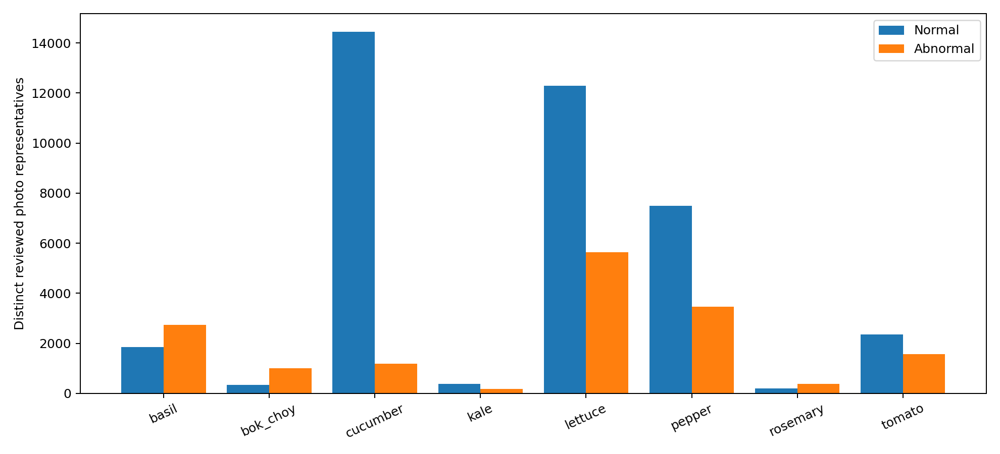

실험 20261016T031000_KST_crop8_effb0_c901e829 · 2026-10-15T20:18:13.139189+00:00
파일 항목, 고유 SHA, 확인된 사진 계열, 누출 방지 촬영 그룹은 서로 다른 수입니다. 전체 공개 이미지의 독립 개체 수는 확인할 수 없습니다. 새 케일·일부 정상 주석은 단일 AI 육안 판정이며 식물병리 전문가 정답이 아닙니다. 모델 성능을 보고 판정을 바꾸지 않았습니다.
| stage | image_entries | unique_sha256 | confirmed_photo_components | conservative_leakage_groups |
|---|---|---|---|---|
| processed_original_entries | 60593 | 58788 | ||
| registered_raw_kale_candidates | 6400 | 6400 | ||
| included_before_same_photo_deduplication | 56393 | 55952 | 55482 | 7773 |
| fixed_split_distinct_photo_representatives | 55482 | 55482 | 55482 | 7773 |
| train_image_list | 34622 | 34622 | 34622 | 4666 |
| validation_image_list | 10127 | 10127 | 10127 | 1554 |
| validation_evaluation_representatives | 1898 | 1898 | 1898 | 1554 |
| test_image_list | 10733 | 10733 | 10733 | 1553 |
| test_evaluation_representatives | 1884 | 1884 | 1884 | 1553 |
| crop | binary_label | image_entries | percent_of_crop | train_images | validation_images | test_images | validation_evaluation_representatives | test_evaluation_representatives |
|---|---|---|---|---|---|---|---|---|
| basil | 0 | 1851 | 40.344376634699216 | 1089 | 432 | 330 | 98 | 101 |
| basil | 1 | 2737 | 59.655623365300784 | 1524 | 555 | 658 | 125 | 138 |
| bok_choy | 0 | 344 | 25.500370644922164 | 208 | 69 | 67 | 54 | 52 |
| bok_choy | 1 | 1005 | 74.49962935507783 | 535 | 241 | 229 | 47 | 52 |
| cucumber | 0 | 14447 | 92.3898445993477 | 8557 | 3273 | 2617 | 101 | 104 |
| cucumber | 1 | 1190 | 7.610155400652299 | 708 | 279 | 203 | 189 | 175 |
| kale | 0 | 372 | 67.51361161524501 | 235 | 71 | 66 | 43 | 41 |
| kale | 1 | 179 | 32.48638838475499 | 103 | 38 | 38 | 27 | 27 |
| lettuce | 0 | 12291 | 68.57286320017853 | 7528 | 1434 | 3329 | 163 | 176 |
| lettuce | 1 | 5633 | 31.42713679982147 | 3577 | 1202 | 854 | 215 | 168 |
| pepper | 0 | 7488 | 68.38980728833684 | 5868 | 900 | 720 | 12 | 19 |
| pepper | 1 | 3461 | 31.610192711663167 | 2020 | 701 | 740 | 44 | 50 |
| rosemary | 0 | 194 | 33.91608391608391 | 94 | 53 | 47 | 41 | 46 |
| rosemary | 1 | 378 | 66.08391608391608 | 183 | 111 | 84 | 32 | 25 |
| tomato | 0 | 2346 | 59.969325153374236 | 1440 | 453 | 453 | 420 | 430 |
| tomato | 1 | 1566 | 40.030674846625764 | 953 | 315 | 298 | 287 | 280 |

정리 후 작물별 이미지 수 최대/최소 비율 32.53배, 학습 목록의 비율 40.09배입니다. 학습 수 하위 2종은 rosemary, kale로 성능 확인 전에 고정했습니다.
| crop | label_provenance | images | leakage_groups |
|---|---|---|---|
| basil | original_source_metadata | 4588 | 1042 |
| bok_choy | AI_visual_annotation | 344 | 276 |
| bok_choy | original_source_metadata | 1005 | 238 |
| cucumber | original_source_metadata | 15637 | 1387 |
| kale | AI_visual_annotation | 551 | 312 |
| lettuce | original_source_metadata | 17924 | 1820 |
| pepper | original_source_metadata | 10949 | 336 |
| rosemary | AI_visual_annotation | 194 | 176 |
| rosemary | original_source_metadata | 378 | 114 |
| tomato | original_source_metadata | 3912 | 2180 |
원출처 JSON·클래스 정의와 연결된 라벨은 원출처 근거로 유지했습니다. 육안 의심만으로 병명을 새로 확정하지 않았습니다. 케일의 정상 외관/뚜렷한 잎 조직 소실 판정 기준은 visual_annotation_ledger와 visual_adjudications에 기록했습니다. 촬영 시기·품종·촬영 단계와 상태의 연관은 kale_acquisition_confounding.csv에서 확인할 수 있습니다.
| crop | binary_label | train_images | A_weight | B_weight | C_weight | C_group_mass |
|---|---|---|---|---|---|---|
| basil | 0 | 1089 | 1 | 0.6919141452496103 | 1.9870293847566576 | 2163.875 |
| basil | 1 | 1524 | 1 | 1.8026658335936687 | 1.4198654855643045 | 2163.875 |
| bok_choy | 0 | 208 | 1 | 0.6919141452496103 | 10.403245192307692 | 2163.875 |
| bok_choy | 1 | 535 | 1 | 1.8026658335936687 | 4.044626168224299 | 2163.875 |
| cucumber | 0 | 8557 | 1 | 0.6919141452496103 | 0.2528777608975108 | 2163.875 |
| cucumber | 1 | 708 | 1 | 1.8026658335936687 | 3.0563206214689265 | 2163.875 |
| kale | 0 | 235 | 1 | 0.6919141452496103 | 9.207978723404254 | 2163.875 |
| kale | 1 | 103 | 1 | 1.8026658335936687 | 21.008495145631066 | 2163.875 |
| lettuce | 0 | 7528 | 1 | 0.6919141452496103 | 0.2874435441020191 | 2163.875 |
| lettuce | 1 | 3577 | 1 | 1.8026658335936687 | 0.6049412915851272 | 2163.875 |
| pepper | 0 | 5868 | 1 | 0.6919141452496103 | 0.3687585207907294 | 2163.875 |
| pepper | 1 | 2020 | 1 | 1.8026658335936687 | 1.0712252475247526 | 2163.875 |
| rosemary | 0 | 94 | 1 | 0.6919141452496103 | 23.01994680851064 | 2163.875 |
| rosemary | 1 | 183 | 1 | 1.8026658335936687 | 11.824453551912569 | 2163.875 |
| tomato | 0 | 1440 | 1 | 0.6919141452496103 | 1.5026909722222221 | 2163.875 |
| tomato | 1 | 953 | 1 | 1.8026658335936687 | 2.2705928646379854 | 2163.875 |
N은 학습 이미지 수만 사용합니다. B와 C 모두 전체 가중치 합 N, 상태별 N/2이며 C의 각 그룹 질량은 N/16입니다. 배치 손실 분모는 이미지 수입니다. 테스트·검증 수를 가중치에 사용하지 않습니다.
| reason | image_entries |
|---|---|
| Outside the two reviewed source dates; retain original file | 5760 |
| Unresolved source/crop/state; not eligible without evidence | 3977 |
| Unreliable crop/health provenance in processed kale; use crop-verified raw visual annotations instead | 475 |
| Confirmed shared-photo crop/state ambiguity; no majority-vote relabeling | 247 |
| Ambiguous mark, fold, margin morphology, colour or cotyledon-only view | 89 |
| Ambiguous visible state, crop composition, significant mark, or obscured foliage | 42 |
| Exact photograph has contradictory normal/abnormal source annotations | 10 |
모든 제외는 새 manifest에만 표시했습니다. 기존 파일·심볼릭 링크는 유지했습니다. 촬영 부위·출처·배경·이상 유형의 차이는 표본 수와 함께 변하므로 불균형 보정 효과의 해석 한계로 보고합니다.